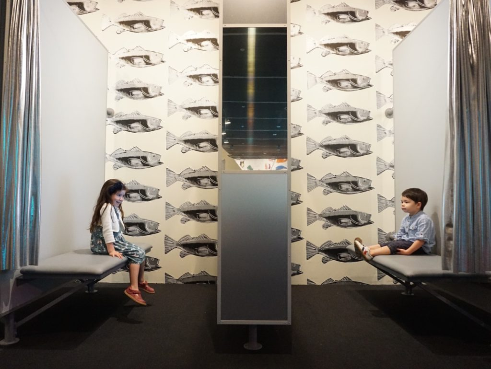
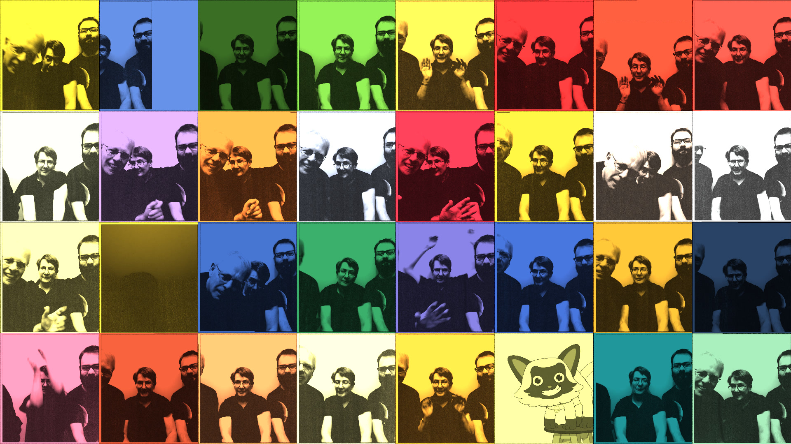
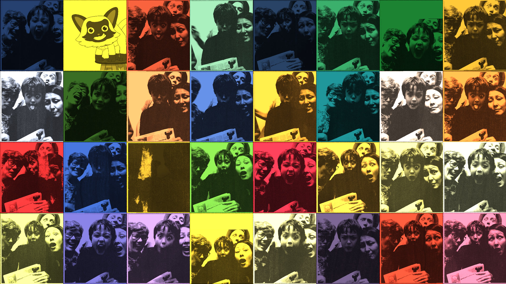
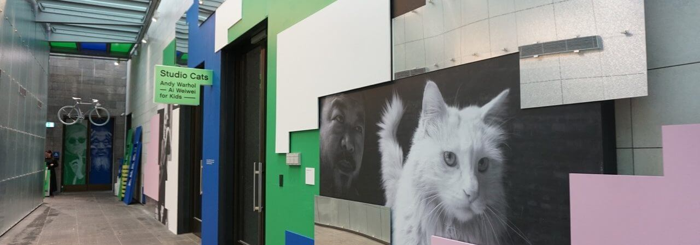

Andy Warhol’s Photobooth was an interactive installation I built for The National Gallery of Victory in 2015. Participants would be guided by Sam the cat to throw a series of poses while photos were taken. The images were then processed in the style of Andy Warhol’s Ethel Scull 36 Times. Participants could then share a high resolution image along with an animated video via email. Over 100,000 emails were shared through out the time of the install.



